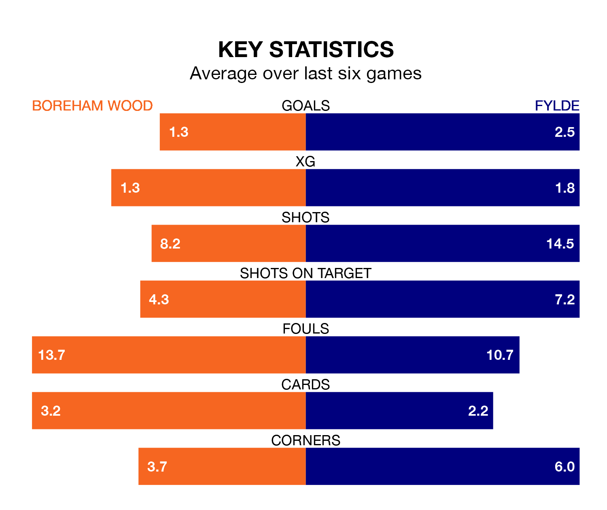

Boreham Wood host Fylde on Saturday at Meadow Park in the National League.
In their last league match, on February 17, Boreham Wood lost to Hartlepool United 3-1 away, with their goal scored by Kabongo Tshimanga.
Fylde drew, 2-2 at home against Solihull Moors on Tuesday, with Danny Ormerod and Nicholas George Haughton on the scoresheet.
In the last 10 years, Boreham Wood and Fylde have played each other on eight occasions. Boreham Wood won three of them, Fylde two, and they drew three times.
On average, the Wood scored 1.4 goals and the Coasters 1.4 in those matches.
Their last meeting was on September 26, when they played out a 2-2 draw.
With 43 goals in 34 games so far this season, Boreham Wood are scoring at below the league average rate with 1.3 goals per game. And they are conceding more than average, letting in 56 goals at a rate of 1.6 per game.
Fylde, meanwhile, are above average scorers, with 1.6 goals per game, compared to a league average of 1.5. They have conceded 1.8 goals per game.
The Wood are in mixed form in the National League, with two wins and a draw from their last six games.
With four wins and a draw over that period, the Coasters's form is much better – they have taken 13 points from 18, compared to the hosts' seven.
The away side are 16th in the table after 34 games, of which they have won 10 and drawn nine, earning 39 points.
Boreham Wood are one place ahead of Fylde in 15th, with nine wins and 13 draws putting them on 40 points.
Updated: 10:08 (UTC), 23/02/24